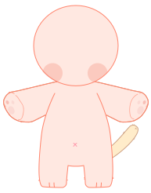

<!DOCTYPE html>
<html lang="en">
<head>
  <meta charset="UTF-8">
  <meta http-equiv="X-UA-Compatible" content="IE=edge">
  <meta name="viewport" content="width=device-width, initial-scale=1.0">
  <title>Document</title>
  <style>
    *{padding: 0; margin: 0;}
    #submenu>article{
      /* width: 100vw;
      height: 53vh; */

      border: 1px solid red;

      display: flex;
      justify-content: center;
      align-items: center;

      grid-template-columns: repeat(4, 1fr);
      grid-template-rows: repeat(5,1fr);

    }
    #submenu>article>div{
      display: flex;
    }
  </style>
</head>
<body>
  <!-- 1. 하고싶은 내용, 구조(부모자식간의 관계)를 적기
    1. id = menu 라는 이름을 가진 전체 menu박스 (ul)
    2. dataset menus라는 이름을 가진 menus (li)
    3. id = submenu 라는 이름을 가진 submenu 전체 박스 (section)
    4. dataset menus라는 이름을 가진 서브메뉴박스 (article)
    5. 그안에 들어가는 clickbox ==> 배열의 값만큼 생성 되도록 (div)
  -->

  <!-- 2. 위의 내용을 가지고 마크업 먼저-->
  <!-- <div id="root">
    <ul id="menu">
      <li data-menus="menus-1">menus-1</li>
      <li data-menus="menus-11">menus-11</li>
    </ul>
    <section id="submenu">
      <article data-menus="menus-1">submenu-1</article>
      <article data-menus="menus-11">submenu-11</article>
    </section>
  </div> -->
  
  <div id="root"></div>
  <!--  -->
  
  <!-- 3. 마크업구조가 맞는지 확인 후 js-->
  <script>
    
    function box(target,width,height,backgroundColor){
      target.style.width = width;
      target.style.height = height;
      target.style.backgroundColor = backgroundColor;
    }
    // --------------------------------------------

    const root = document.getElementById("root");
    const menus = document.querySelectorAll('#menu>li');
    // const submenu = document.getElementById("submenu");

    // function createElement(createDiv, createElement, parentDiv){
    //   const createDiv = document.createElement(createElement);
    //   //Q. 위의 const 다음에 오는 변수의 이름을 함수 createDiv로 바꿔서 사용할순없을까?? 
    //   parentDiv.appendChild(createDiv);
    // }
    
    const ul = document.createElement("ul");
    ul.setAttribute("id", "menu")
    root.appendChild(ul);
    
    // --------------------------------------------
    const menuArr = ["기본", "눈", "코입", "눈썹", "뒷머리", "앞머리" , "귀", "의상","장식1","장식2","뒷장식"];
    
    for(let i=0; i<menuArr.length; i++){
      const li = document.createElement("li");
      li.textContent=menuArr[i];
      li.setAttribute("data-menus", menuArr[i]);
      ul.appendChild(li);
    }
    // --------------------------------------------
    
    const submenu = document.createElement('section');
    submenu.setAttribute("id", "submenu");
    root.appendChild(submenu);
    
    // --------------------------------------------
    
    const menu = document.getElementById("menu");
    console.log(menu);

    for(let i =0; i<menuArr.length; i++){
      const clickContainer = document.createElement('article');
      clickContainer.setAttribute("data-menus", menuArr[i]);
      clickContainer.textContent=menuArr[i];
      submenu.appendChild(clickContainer);
      clickContainer.style.display="none";
      console.log(clickContainer);
    }
    // ---------------------------------------------

    const submenus = submenu.children;
    console.log(submenu);

    //-------------------------------------------------

    const subData = {
      "기본": ["base_BASE.svg"],
      "눈": ["base_눈_1.svg","base_눈_2.svg"],
      "코입": ["base_코입.svg","이미지-2","이미지-3"],
      "눈썹": ["base_눈썹.svg","이미지-2"], 
      "뒷머리": ["base_뒷머리.svg","이미지-2"],
      "앞머리": ["base_앞머리.svg","이미지-2","이미지-3"],
      "귀": ["base_귀.svg","이미지-2"],
      "의상": ["base_의상.svg","이미지-2","이미지-3"],
      "장식1": ["base_장식1.svg","이미지-2"],
      "장식2": ["base_장식2.svg","이미지-2","이미지-3"],
      "뒷장식": ["base_뒷장식.svg","이미지-2"]
    }

    const subDataArr = Object.values(subData);
    console.log(subDataArr.length);

    //-------------------------------------------------
    function Deletediv(){
      const deletediv = document.getElementById("delete");
      // 변수 removediv는 문서의 아이디 중 "delete"를 가진 아이
      deletediv.remove();
    }

    function Deleteimg(){
      const deletediv = document.getElementById("deleteimg");
      // 변수 removediv는 문서의 아이디 중 "delete"를 가진 아이
      deletediv.remove();
    }
    //-------------------------------------------------
    // newdiv 전용
    function createnewdiv(parentDiv, innerHTMLValue, classIdDataName, Name){
      const newdiv= document.createElement("div");
      newdiv.innerHTML = innerHTMLValue;
      newdiv.setAttribute(classIdDataName, Name)
      newdiv.setAttribute("data-menus", event.target.dataset.menus )
      parentDiv.appendChild(newdiv);
      newdiv.style.display="flex";
      if(newdiv.innerHTML === "undefined"){
        console.log("값이 없습니다.");
        newdiv.style.display="none";
      }else {
        console.log("값이 있습니다.")
        box( newdiv,'10vw','10vw', '#333');
        // newdiv.innerHTML = "";
        //innerHTML 안의 내용을 없애줌 
      }
    }
    //-------------------------------------------------
    
    let isstatus =true;
    menu.addEventListener("click", function(event){
      console.log("click")
      for(let i=0; i<submenus.length; i++){
        if(submenus[i].dataset.menus === event.target.dataset.menus){
          // console.log("같다")
          submenus[i].style.display="block";
          if(isstatus === true){
            console.log(isstatus);
            for(let j=0; j<subDataArr.length; j++){
              createnewdiv(submenu.children[i], subData[event.target.dataset.menus][j], 'id', "delete");
              
              //newdiv 생성 및 undefined display = none이 들어간 함수 
          }
          isstatus = false;
          console.log(isstatus);
        } 
        else {
            console.log(isstatus);
            // 만약 isstatus !== true가 아니라면 
            const submenuschild = document.querySelectorAll("#submenu>article>div");
            console.log(submenuschild);
            for(let i=0; i<submenuschild.length; i++){
              Deletediv(submenuschild);
            }
            // 기존에 있던 newdiv 삭제
            // 다시 newdiv 생성
            for(let j=0; j<subDataArr.length; j++){
              createnewdiv(submenu.children[i], subData[event.target.dataset.menus][j], 'id', "delete");
              //newdiv 생성 및 undefined display = none이 들어간 함수 
          }
            // isstatus = true;
            // true로 돌아가면 3번 클릭시 중복생성이 되므로 돌아가지 않는다. 
          }
        }else{
          // console.log("다르다")
          submenus[i].style.display="none";
        }
      }
    });

    //Q. 그리고 text가 아닌 박스(도형:네모)가 생성되도록해야한다. (gird 사용)

    //Q. 그다음 해당 클릭박스를 누르면 main에 이미지가 보이도록 하는 작업도 실행 (생각해보기/검색)

    // 1. newdiv 를 클릭하면 main에 이미지가 보이도록해줘 or 새로운 요소를 생성해줘. 
    // 2. newdiv 를 클릭하면 빨강 / 클릭 안 한것은 검정 (event.target)
    // 3. main>section(11)>div(image)
    // main이라는 요소는 id도 main (지정하는데 필요하다면 id 추가)
    // section(11개) id 또는 dataset에 menuArr값처럼 넣기
    // div 생성 : newdiv를 클릭하면 새로운 div 생성
    // submenus에 클릭 이벤트 추가 > event.target(newdiv)를 클릭하면 색상변화 (추후 디자인)
    // ====================================================
    // main 생성
    const main = document.createElement("section");
    main.setAttribute("id" , "main");
    root.appendChild(main);
    
    // ====================================================

    // main>article 생성
    for(let i =0; i<menuArr.length; i++){
      const imageContainer = document.createElement("article");
      imageContainer.setAttribute("data-menus" , menuArr[i]);
      main.appendChild(imageContainer);
      imageContainer.style.display = "none";
      box (imageContainer, "500px", "500px", "#c4c4c4");
    }
    // ====================================================
    function createDiv(parentDiv) {
      // const newdiv= document.createElement("div");
      // box (newdiv, "50px", "50px", "#333");
      // newdiv.setAttribute(classIdDataName, Name)
      
      const bgimage = document.createElement("img");
      // bgimage 라는 변수 선정 = 새로운 img 요소 생성
      bgimage.src = `./images/${event.target.innerHTML}`;
      bgimage.setAttribute("id", "deleteimg");
      // 이미지의 src = event.target.innerHTML이다. 
      // html에서 작성한 것과 같은 맥락으로 작성
      parentDiv.appendChild(bgimage);
    }

    // ====================================================
    // submenu click event

    let count = true;
    submenu.addEventListener("click", function(event){
      console.log("click")
      if(count === true){
        for(let i=0; i<submenus.length; i++){
          // console.log(submenu.children[i].dataset.menus);
          // console.dir(event.target.innerHTML);
          // console.log(main.children[i].dataset.menus);
        if(main.children[i].dataset.menus === event.target.dataset.menus){
          main.children[i].style.display="block";
          createDiv(main.children[i]);
        }
        }
        count = false;
      }else {
        //count = true가 아닐때
        for(let i=0; i<submenus.length; i++){
          Deleteimg(main.children[i].children);
        //   if(main.children[i].dataset.menus === event.target.dataset.menus){
        //   main.children[i].style.display="block";
        //   createDiv(main.children[i]);
        // }
        count=true;
        console.log(count);
        }
      }
    });
    // 이미지가 각 섹션마다 하나씩만 나오도록 만들기 > 삭제하고 > 생성 하기

    // 이미지는 나온다. >  이제 이미지 박스에 파일 이름을 걸어서 넣고 
    // main page에 있는 section에 z-index를 순차적으로 넣어주기... position도 같이 넣는데 랠러티브면 될것같다. z-index 순차적으로 넣을 방법 생각하기 length는 지금 순서가 반대로 되어있다. 
  </script>
</body>
</html>